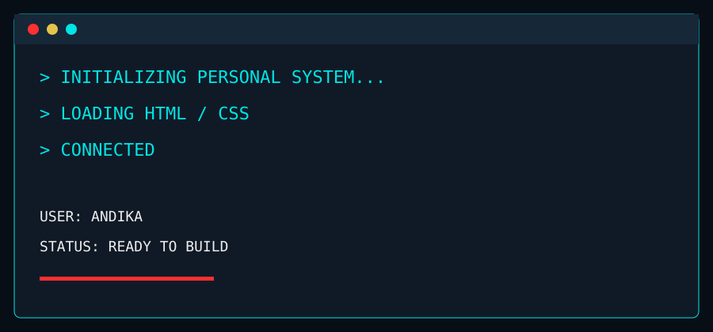

> DEVELOPMENT_LOG.TXT
> STARTING CODE ENVIRONMENT...
> HTML: LOADED
> CSS: LOADED
Saya suka mempelajari cara kerja website dan mencoba membuat tampilan antarmuka menggunakan HTML dan CSS. Saya juga pernah mencoba Laravel, Java, dan database untuk kebutuhan tugas maupun project pribadi.
> CURRENT_TOOLKIT
> TOOLKIT STATUS: IN USE
HTML & CSS
Membangun struktur dan desain halaman web.JAVA
Belajar logika pemrograman dan OOP.LARAVEL
Mencoba pengembangan aplikasi berbasis web.DATABASE
Belajar SQL, tabel, relasi, dan pengolahan data.SYSTEM_PREVIEW.JPG
